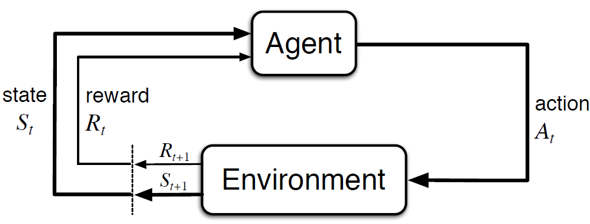
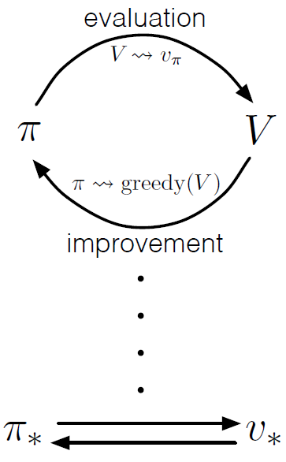

An Introduction to Reinforcement Learning
Mustafa Aslan, PhD Researcher
Data Lab for Social Good Research Lab
Cardiff University, UK
Slides: https://mustafaslancoto.github.io/workshops/
15 May 2025
Agenda
- What is Reinforcement Learning
- Elements of Reinforcement Learning
- Categories of RL methods
- Model-based methods \(\approx\) Dynamic Programming
- Model-Free Methods
- Monte Carlo
- Sarsa
- Q-learning
What is reinforcement learning
Reinforcement Learning
- Reinforcement learning is learning what to do—how to map situations to actions to maximize a numerical reward signal.
- The learner is not told which actions to take, but instead must discover which actions yield the most reward by trying them.
Elements of Reinforcement Learning
Elements of Reinforcement Learning
Agent is the learner and decision maker.
- It interacts with the environment (comprising everything outside the agent) continually to select actions
- The environment responds to these actions and presents new situations to the agent.
- It interacts with the environment (comprising everything outside the agent) continually to select actions
A policy defines the learning agent’s way of behaving at a given time.
- A mapping from states of the environment to actions to be taken when in those states.
The reward signal indicates what is good immediately after each decision time.
A value function specifies what is good in the long run.
- The value of a state is the total amount of reward an agent can expect to accumulate over the future, starting from that state.
Elements of Reinforcement Learning

Agent gives rise to a sequence that begins like this
\[ S_0, A_0, R_1, S_1, A_1, R_2, S_2, A_2, R_3, \dots S_t, A_t, R_{t+1} \]
Goals and Rewards
- At each time step, the reward is a simple number, \(R_t \in \mathbb{R}\) passing from the environment to the agent.
- The agent’s goal is to maximize the total (cumulative) amount of reward it receives in the long run.
- The aim is to maximize the
expected return, \(G_t\), which is defined as: \[ G_t \doteq R_{t+1} + R_{t+2} + R_{t+3}+ \dots+R_T \]
Discounting technique is used to prioritize immediate rewards over future rewards.
- The idea is to multiply future rewards by a discount factor \(\gamma \in (0,1]\)
- This makes future rewards worth less than immediate rewards.
- The return \(G_t\) with discounting is defined as:
\[ G_t \doteq R_{t+1} + \gamma R_{t+2} + \gamma^2 R_{t+3} + \cdots = \sum_{k=0}^{\infty} \gamma^k R_{t+k+1} \]
Policies and Value Functions
A policy is a mapping from states to probabilities of selecting each possible action. If the agent is following policy \(\pi\) at time \(t\), then \(\pi(a \mid s)\) is the probability that \(A_t = a\) if \(S_t = s\)
Value functions—functions of states (or of state–action pairs)estimate how good it is for the agent to be in a given state (or how good it is to perform a given action in a given state)- The value function of a state \(s\) under a policy \(\pi\), denoted \(v_\pi(s)\) is: \[ v_\pi(s) \doteq \mathbb{E}_\pi[G_t | S_t=s] = \mathbb{E}_\pi\left[\sum_{k=0}^{\infty} \gamma^k R_{t+k+1} \mid S_t=s\right], \text{ for all } s \in \mathbf{S}, \]
where \(\mathbb{E}[\cdot]\) denotes the expected value of a random variable given that the agent follows policy \(\pi\), and \(t\) is any time step.
Categories of RL methods
Categories of reinforcement learning methods
Model-based
- The agent knows/learns the model of the environment
- They then compute the policy using the ADP methods or the model-free methods on simulated data
Pros:
- Sample efficient
- Safer exploration
Cons:
- Prone to the model errors
- Learning a model is challenging
Model-free
- The agent does not know the model of the environment
- They learn the values or policies from trial-and-error interactions with the environment
Pros:
- Do not need a model
- Flexible
Cons:
- Sample inefficient: requires a lot of interactions with the environment
- Slow convergence
Model-based methods (Dynamic Programming)
Conditional probability of the next state given the current state and action taken \[ p(s' \mid s, a) \doteq \Pr \{ S_t = s' \mid S_{t-1} = s, A_{t-1} = a \}, \text{ for all } s',s \in S, \text{and} a \in A(s) \]
The function \(p\) defines the dynamics of the MDP
\(p(s', \mid s, a)\) is a dynamics function and \(p\) specifies a probability distribution for each choice of \(s\) and \(a\), that is: \[ \sum_{s'\in S}p(s'\mid s, a) = 1, \text{ for all } s \in S, a \in A(s) \]
Model-based methods (Dynamic Programming)
- They are used to derive optimal policies and value functions in Markov Decision Processes (MDPs) and reinforcement learning.
Bellman Equation
- The Bellman equations express the relationship between the value of a state and the values of its successor states. For the state-value function \(v_\pi\), the Bellman equation is:
\[ \begin{aligned} v_\pi(s) &\doteq \mathbb{E}_\pi \big[G_t \mid S_t = s \big] \\ &= \mathbb{E}_\pi \big[R_{t+1} + \gamma G_{t+1} \mid S_t = s \big] \\ &= \mathbb{E}_\pi \big[R_{t+1} + \gamma v_\pi(S_{t+1}) \mid S_t = s \big] \\ &= \sum_a \pi(a \mid s) \sum_{s',r} p(s', r \mid s, a) \big[ r + \gamma v_\pi(s') \big]. \end{aligned} \]
Model-based methods (Dynamic Programming)
An optimal policy is a policy that achieves the maximum expected return from any initial state.
The optimal state-value function \(v_*\) is the maximum value function over all policies: \[ v_*(s) = \max_\pi v_\pi(s), \text{ for all } s \in S \]
The optimal action-value function \(q_*\) is the maximum action-value function over all policies: \[ q_*(s, a) = \max_\pi q_\pi(s, a), \text{ for all } s \in S, a \in A(s) \]
We use Dynamic Programming (DP) to leverage value functions in the search for good policies.
The Bellman optimality equation for \(v_*\) is: \[ \begin{aligned} v_*(s) &= \max_a \mathbb{E} \big[R_{t+1} + \gamma v_*(S_{t+1}) \mid S_{t} = s, A_{t} = a \big] \\ &= \max_a \sum_{s',r}p(s',r|s,a) \big[r+\gamma v_*(s')], \end{aligned} \]
The Bellman optimality equation for \(q_*\) is: \[ q_*(s, a) = \sum_{s', r} p(s', r \mid s, a) \big[ r + \gamma \max_{a'} q_*(s', a') \big] \]
Policy Evalulation (Prediction)
Policy evaluation is the computation of the state-value function \(v_\pi\) for an arbitrary policy \(\pi\). We also refer to it as the *prediction problem. \[ \begin{aligned} v_\pi(s) &\doteq \mathbb{E}_\pi \big[G_t \mid S_t = s \big] \\ &= \mathbb{E}_\pi \big[R_{t+1} + \gamma G_{t+1} \mid S_t = s \big] \\ &= \mathbb{E}_\pi \big[R_{t+1} + \gamma v_\pi(S_{t+1}) \mid S_t = s \big] \\ &= \sum_a \pi(a \mid s) \sum_{s',r} p(s', r \mid s, a) \big[ r + \gamma v_\pi(s') \big]. \end{aligned} \]
where \(\pi(a|s)\) is the probability of taking action \(\alpha\) in state \(s\) under policy \(\pi\), and the expectations are subscripted by \(\pi\) to indicate that they are conditional on \(\pi\) being followed.
Consider a sequence of approximate value functions \(v_0, v_1, v_2,\dots,\). Each successive approximation is obtained by using the Bellman equation for \(v_\pi\) as an update rule:
\[ \begin{aligned} v_{k+1}(s) &\doteq \mathbb{E}_\pi \big[R_{t+1} + \gamma v_k(S_{t+1}) \mid S_t = s \big] \\ &= \sum_a \pi(a \mid s) \sum_{s',r} p(s', r \mid s, a) \big[ r + \gamma v_k(s') \big]. \end{aligned} \]
Policy Evalulation (Prediction)
The sequence \({v_k}\) can be shown in general to converge to \(v_\pi\) as \(k \rightarrow \infty\) under the same conditions that guarantee the existence of \(v_\pi\). This algorithm is called iterative policy evaluation.
Policy Improvement
- We know how good it is to follow the current policy from \(s\)—that is \(v_\pi(s)\)—but would it be better or worse to change to the new policy?
One way to answer this question is to consider selecting \(a\) in \(s\) and thereafter following the existing policy \(\pi\).
This leads to the definition of the q-value of a state-action pair:
\[ \begin{aligned} q_\pi(s, a) &\doteq \mathbb{E} \big[ R_{t+1} + \gamma v_\pi(S_{t+1}) \mid S_t = s, A_t = a \big] \\ &= \sum_{s', r} p(s', r \mid s, a) \big[ r + \gamma v_\pi(s') \big]. \end{aligned} \]
The policy improvement theorem states that if we improve the policy by acting greedily with respect to \(q_\pi\), the new policy \(\pi'\) will be at least as good as \(\pi\).
Formally, if
\[ \begin{aligned} \pi'(s) &= \arg\max_a q_\pi(s, a) \\ &= \arg \max_a \mathbb{E} \big[R_{t+1}+\gamma v_\pi(S_{t+1}) \mid S_t=s, A_t=a \big] \\ &= \arg \max_a \sum_{s',r}p(s',r \mid s, a) \big[r+\gamma v_\pi(s') \big] \end{aligned} \]
then
\[ v_{\pi'}(s) \geq v_\pi(s). \]
for all \(s \in S\).
Policy Iteration
Once a policy, \(\pi\), has been improved using \(v_\pi\) to yield a better policy, \(\pi^{'}\), we can then compute \(v_{\pi^{'}}\) and improve it again to yield an even better \(\pi^{''}\).
\[ \pi_0 \xrightarrow E v_{\pi_0} \xrightarrow I \pi_1 \xrightarrow E v_{\pi_1}\xrightarrow I \pi_2,\dots \xrightarrow I \pi_* \xrightarrow E v_* \]
where \(\xrightarrow E\) denotes a policy evaluation and \(\xrightarrow I\) denotes a policy improvement. This way of finding an optimal policy is called policy iteration.
Policy Iteration
A complete policy iteration algorithm
Value Iteration
- One drawback to policy iteration is that each of its iterations involves policy evaluation, which may itself be a protracted iterative computation requiring multiple sweeps through the state set.
- Value iteration is a special case of policy iteration where the policy evaluation step is truncated to just one sweep.
- This algorithm combines the policy improvement and truncated policy evaluation steps into a single update operation:
\[ \begin{aligned} v_{k+1}(s) &= \mathbb{E} \big[R_{t+1} + \gamma v_k(S_{t+1}) \mid S_t=s, A_t = a \big] \\ &=\max_a \sum_{s', r} p(s', r \mid s, a) \big[ r + \gamma v_k(s') \big] \end{aligned} \]
for all \(s \in S\).
Value Iteration
- Value iteration is obtained simply by turning the Bellman optimality equation into an update rule.
- Also note how the value iteration update is identical to the policy evaluation update except that it requires the maximum to be taken over all actions.
Let’s code
Generalized Policy Iteration
GPI is a general idea that describes how two processes — evaluating a policy and improving it — work together and influence each other.
Most reinforcement learning algorithms use a value function to judge how good a policy is, and then update the policy based on that judgment.
If both value estimation and policy improvement stabilize (i.e., stop changing), then the policy must be the best possible one for that value function—meaning the policy is optimal.

Model-free methods
- Monte Carlo Methods
- Sarsa
- Q-learning
Monte Carlo Methods
Monte Carlo (MC) Methods
The term “Monte Carlo” is often used more broadly for any estimation method whose operation involves a significant random component.
MC methods solve reinforcement learning problems by averaging results (returns) from sampled experiences sequences of states, actions, and rewards.
They do not require knowledge of the environment’s dynamics, making them powerful for learning from real or simulated experiences.
Monte Carlo Prediction
- Suppose we wish to estimate \(v_{\pi}(s)\), the values of a state \(s\) under policy \(\pi\), given a set of episodes obtained by following \(\pi\) and passing through \(s\).
Monte Carlo Control
Alternating complete steps of policy evaluation and policy improvement are performed, beginning with an arbitrary policy \(\pi_0\) and ending with the optimal policy and optimal action-value function:
\[ \pi_0 \xrightarrow E q_{\pi_0} \xrightarrow I \pi_1 \xrightarrow E q_{\pi_1}\xrightarrow I \pi_2,\dots,\xrightarrow I \pi_* \xrightarrow E q_* \]
Let’s code
Monte Carlo Control without Exploring Starts
- In on-policy control methods the policy is generally soft, meaning that \(\pi(a\mid s)>0\) for all \(s \in S\) and all \(a \in A(s)\), but gradually shifted closer and closer to a deterministic policy.
- The on-policy method we present in this section uses \(\epsilon\)-greedy policies, meaning that most of the time they choose an action that has maximal estimated action value, but with probability \(\epsilon\) they instead select an action at random. That is, all nongreedy actions are given the minimal probability of selection, \(\frac{\epsilon}{|A(s)|}\), and the remaining bulk of the probability \(1-\epsilon+\frac{\epsilon}{|A(s)|}\) is given to the greedy action.
- \(\epsilon\)-greedy policies are examples of \(\epsilon-soft\) policies, definied as policies for which \(\pi(a \mid s) \geq \frac{\epsilon}{|A(s)|}\) for all states and actions, for some \(\epsilon > 0\). Among \(\epsilon\)-soft policies, \(\epsilon\)-greedy policies are in some sense those that are closest to greedy.
Monte Carlo Control without Exploring Starts
where \(|A(s)|\) is the number of actions available in state \(s\).
The \(\epsilon\)-greedy policy ensures that all actions are tried, but actions with higher value estimates are tried more frequently. This balances exploration (trying new actions) and exploitation (choosing the best-known action).
Temporal-Difference Learning
Temporal-Difference Learning
- TD learning is a combination of Monte Carlo ideas and dynamic programming (DP) ideas.
- Like Monte Carlo methods, TD methods can learn directly from raw experience without a model of the environment’s dynamics.
- Like DP, TD methods update estimates based in part on other learned estimates, without waiting for a final outcome (they bootstrap).
TD Prediction
Whereas Monte Carlo methods must wait until the end of the episode to determine the increment to \(V(St)\) (only then is \(G_t\) known), TD methods need to wait only until the next time step. At time t + 1 they immediately form a target and make a useful update using the observed reward \(R_{t+1}\) and the estimate \(V_{S_{t+1}}\). The simplest TD method makes the update:
\[ V(S_t) \leftarrow V(S_t) + \alpha \big[ R_{t+1} + \gamma V(S_{t+1})-V(S_t) \big] \]
immediately on transition to \(S_{t+1}\) and receiving \(R_{t+1}\). In effect, the target for the Monte Carlo update is \(G_t\), whereas the target for the TD update is \(R_{t+1} + \gamma V(S_{t+1})\). This TD method is called TD(0), or one-step TD.
TD Prediction
Sarsa: On-policy TD Control
we consider transitions from state–action pair to state–action pair, and learn the values of state–action pairs.
\[ Q(S_t, A_t) \leftarrow Q(S_t, A_t) + \alpha \big[R_{t+1}+\gamma Q(S_{t+1}, A_{t+1})-Q(S_t, A_t) \big] \]
Let’s code
Q-learning: Off-policy TD Control
Q-learning is defined by
\[ Q(S_t, A_t) \leftarrow Q(S_t, A_t)+ \alpha \big[R_{t+1}+\gamma \max_aQ(S_{t+1}, a)-Q(S_t, A_t) \big] \]
The Q-learning algorithm is shown below in procedural form.
Let’s code
Recommended materials
Readings:
- Reinforcement Learning: An Introduction by Richard S. Sutton and Andrew G. Barto
- Reinforcement Learning and Stochastic Optimization by Warren B. Powell